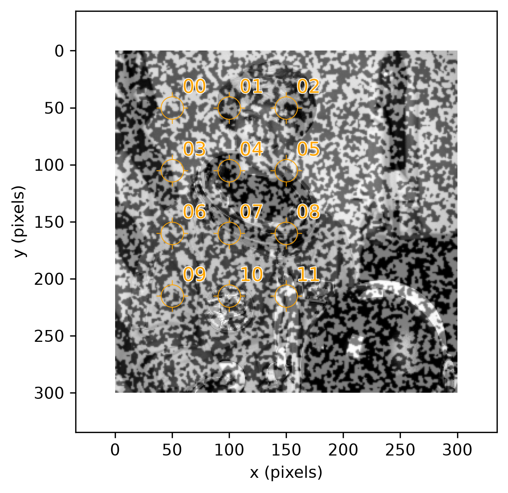
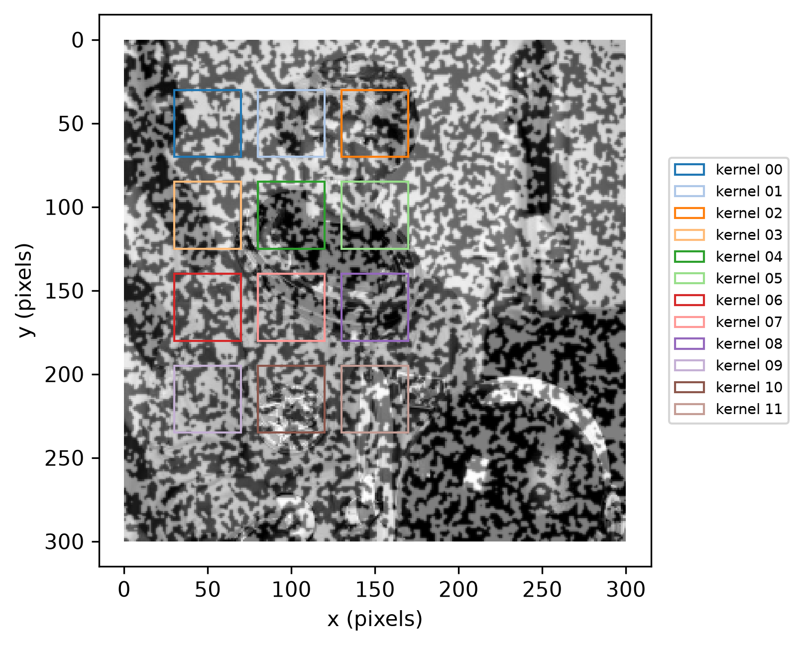
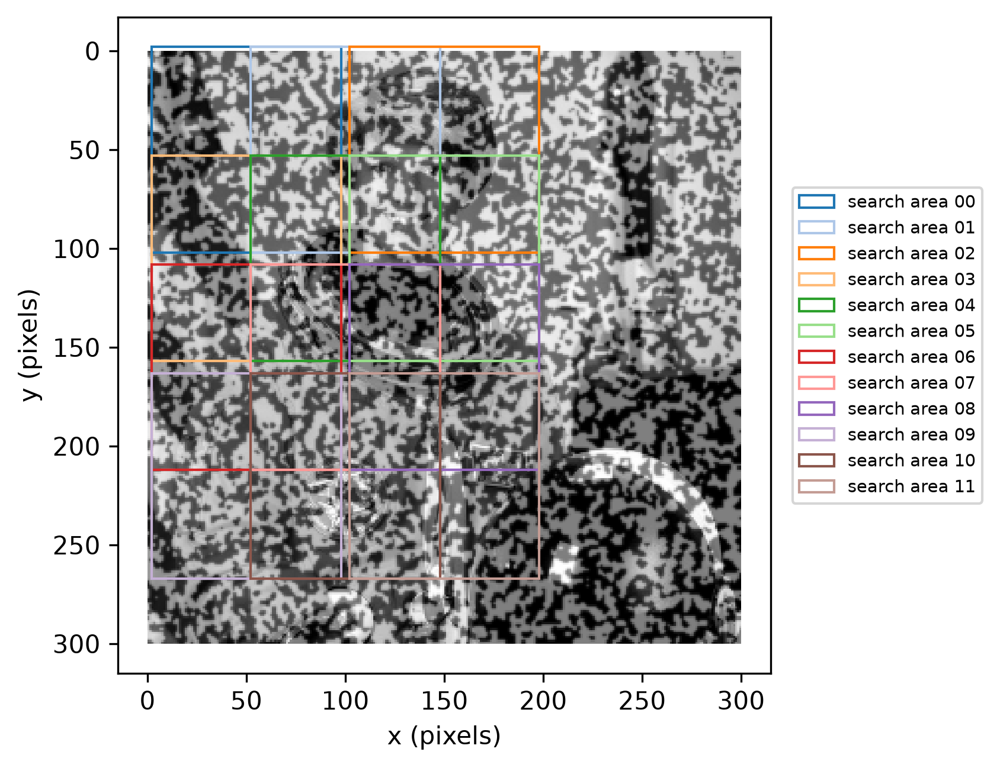
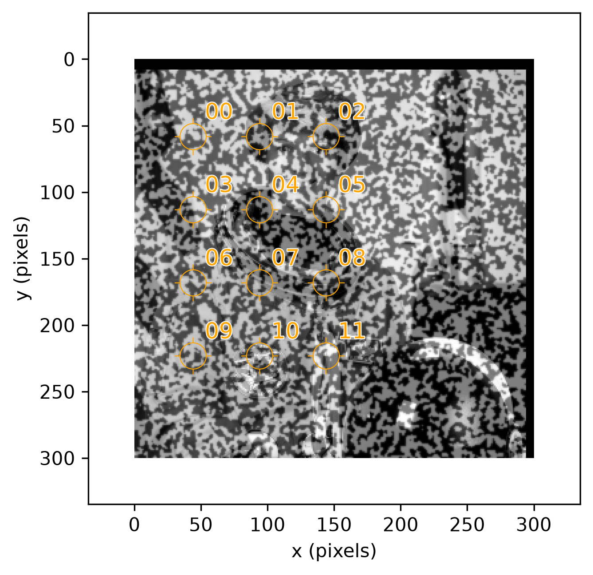

Multi-Point Motion
Single Point Motion tracked exactly one point, , between a reference and current image. Real digital image correlation work needs to track many points at once — a whole collection of tracked points is exactly what a finite element mesh's nodes are built from. This page shows how to track many points simultaneously, and motivates the connection to the Finite Element Method (FEM).
Point Grid
A grid of points spans some number of points along and along ,
with some spacing between adjacent points along each axis.
dictk.grid.generate builds one: the
count of points along and along need not be equal, and the
spacing along and along need not be equal either — this is a
general rectangular collection of points, not necessarily a square or
uniformly-spaced one. spacing_x and spacing_y are in pixels, the same
units as every other coordinate in this guide.
This page reuses astronaut0, the speckle pattern combined with the
astronaut photograph introduced in Image
Generation — the same kind of
reference image Single Point Motion used
checkerboard0 for, just a different one, to keep some visual variety
across this guide:
from dictk.image import read, PixelCoordinate, point_grid_plot
from dictk.grid import generate
reference_image = read(path="astronaut0.png")
points = generate(
origin=PixelCoordinate(x=50, y=50),
count_x=3,
count_y=4,
spacing_x=50,
spacing_y=55,
)
point_grid_plot(
image=reference_image,
points=points,
color="orange",
figsize=(6.4, 4.8),
path="multi_point_motion_grid.png",
)
Saved: multi_point_motion_grid.png

astronaut0 with a 3x4 grid of 12 points (count_x=3, count_y=4), spaced 50 pixels apart along and 55 pixels apart along (spacing_x=50, spacing_y=55), labeled 00-11 in row-major order (top-left to bottom-right).Every point will need a kernel (the patch of reference_image used to
identify it) and a search area (the region of current_image searched
for a match). Before tracking the grid, it helps to see both relative to
the point spacing.
dictk.image.point_grid_boxes_plot
draws one box type per call, so kernel and search area each get their own
figure — each point's own box gets its own color and its own legend
entry (kernel 00, kernel 01, ..., kernel 11), cycling through a
12-color palette drawn from matplotlib's Tableau colormap:
from dictk.image import point_grid_boxes_plot
point_grid_boxes_plot(
image=reference_image,
points=points,
margin_width=20,
margin_height=20,
label_prefix="kernel",
figsize=(6.4, 4.8),
path="multi_point_motion_kernels.png",
)
Saved: multi_point_motion_kernels.png

margin_width=20, margin_height=20).point_grid_boxes_plot(
image=reference_image,
points=points,
margin_width=48,
margin_height=52,
label_prefix="search area",
figsize=(6.4, 4.8),
path="multi_point_motion_search.png",
)
Saved: multi_point_motion_search.png

margin_width=48, margin_height=52).Tracking the Grid explains what these are actually used for, and why these particular sizes were chosen.
Each point's pixel coordinates, in the same row-major order as its label above:
| Point | x (pixels) | y (pixels) |
|---|---|---|
| 00 | 50 | 50 |
| 01 | 100 | 50 |
| 02 | 150 | 50 |
| 03 | 50 | 105 |
| 04 | 100 | 105 |
| 05 | 150 | 105 |
| 06 | 50 | 160 |
| 07 | 100 | 160 |
| 08 | 150 | 160 |
| 09 | 50 | 215 |
| 10 | 100 | 215 |
| 11 | 150 | 215 |
Tracking the Grid
Choosing a kernel size relative to point spacing is a tradeoff: a kernel
needs to be large enough to contain enough distinctive texture to locate
reliably, but small enough that neighboring kernels don't just duplicate
each other's content. A common rule of thumb (with no hard requirement
behind it) is to space points roughly half a kernel's side length apart.
A kernel's full side length is twice its margin, so kernel_margin_width
and kernel_margin_height are themselves already exactly half that side
length — meaning the rule of thumb reduces to a simple comparison: each
margin should be close to the spacing itself, without exceeding it (past
that point, neighboring kernels start overlapping).
The point spacing above is 50 pixels in and 55 pixels in
(spacing_x=50, spacing_y=55). Keeping the kernel isotropic (a single
margin for both axes, kernel_margin_width=kernel_margin_height) means
the smaller of the two spacings is the binding constraint: a margin
above 25 would overlap its -neighbor, since is
already the full spacing in . 25 is therefore the largest isotropic
margin with zero overlap — but right at that ceiling, adjacent kernels
touch exactly, sharing a boundary with no gap at all. The kernel figure
above backs off from that ceiling on purpose: kernel_margin_width=20,
kernel_margin_height=20, leaving a clear 10-pixel gap in and a
15-pixel gap in , comfortably inside the no-overlap ceiling in both
directions, so every kernel's own boundary reads as visibly separate from
its neighbors', not merely non-overlapping.
Nothing requires the kernel to be isotropic — dictk supports an
independent margin per axis just as easily. The equal 20/20 above is
a deliberate choice to illustrate that dictk supports both isotropic and
non-isotropic margins, not a consequence of spacing_x and spacing_y
being unequal forcing one shape or the other.
The search area, by contrast, keeps a clearly
non-isotropic shape: search_margin_width=48, search_margin_height=52
-- just under the point spacing itself, comfortably containing the known
-pixel displacement with plenty of room to spare, while staying
just shy of spacing_x/spacing_y rather than matching them outright.
That much slack still means search areas overlap their neighbors heavily
and run off the image at the edges, which is harmless:
subimage zero-pads whatever falls
outside current_image. Unlike kernels, overlapping search areas cost
nothing but some redundant computation — there's no accuracy downside to
searching the same region from two different points.
One more practical detail worth knowing: phase_cross_correlation
requires the kernel and search area to be exactly the same shape, so
dictk.translation.locate doesn't
crop the search area down — it pads the kernel up to match it, here a
40x40 kernel zero-padded up to the search area's 96x104. In practice,
that means kernel size has little effect on FFT runtime once a search
area is chosen: the transform itself is sized by the larger of the two,
so shrinking an already-small kernel further doesn't make the correlation
any faster.
Single Point Motion
gave checkerboard0 a known rigid-body displacement of pixels via
dictk.image.translate, and confirmed
that a single point's found position matched that displacement exactly.
The same idea, applied to all 12 points in the grid at once, is exactly
what a real DIC workflow looks like:
from dictk.image import translate
dx, dy = -6, 8
current_image = translate(arr=reference_image, dx=dx, dy=dy)
dictk.grid.locate tracks all 12 points
in one call. It doesn't do the correlation itself — it calls
dictk.translation.locate once
per point, and that function is dictk's actual FFT-based DIC engine: for
each point it extracts a kernel from reference_image and a search area
from current_image, then locates the kernel within the search area via
skimage.registration.phase_cross_correlation — FFT-based phase
cross-correlation, not a spatial-domain sliding-window search (see CC via
FFT for the single-point version of this same technique).
Twelve points means twelve independent calls into that engine, using the
same kernel and search-area sizes visualized above:
from dictk.grid import locate
found = locate(
reference_image=reference_image,
current_image=current_image,
reference_points=points,
kernel_margin_width=20,
kernel_margin_height=20,
search_margin_width=48,
search_margin_height=52,
)
Point found expected match
00 44,58 44,58 True
01 94,58 94,58 True
02 144,58 144,58 True
03 44,113 44,113 True
04 94,113 94,113 True
05 144,113 144,113 True
06 44,168 44,168 True
07 94,168 94,168 True
08 144,168 144,168 True
09 44,223 44,223 True
10 94,223 94,223 True
11 144,223 144,223 True
Every one of the 12 found positions matches reference_points[i] + (dx, dy) exactly — not approximately, the same exact-integer-pixel guarantee
Single Point Motion established for one point,
now confirmed across the whole grid at once:
from dictk.image import point_grid_plot
point_grid_plot(
image=current_image,
points=found,
color="orange",
figsize=(6.4, 4.8),
path="multi_point_motion_found.png",
)
Saved: multi_point_motion_found.png

That every point was found exactly is expected, not a coincidence: the
kernel margins above were chosen to roughly follow the rule of thumb, not
to violate it. What the rule of thumb actually buys is robustness, not
correctness on an easy case like this one — a kernel needs enough
distinctive texture to locate reliably, and astronaut0 is a clean,
synthetic image with strong texture everywhere and no noise. A smaller,
more aggressively undersized kernel would likely still have worked here
too; it's on real, noisier imagery, or content with repetitive texture,
that a larger kernel's extra context resolves an ambiguity a smaller one
can't.
Twelve calls into an FFT-based correlation engine, each entirely independent of the other eleven, are a small example of a much bigger pattern: Parallelization picks up from here.